Midterm 1 (Due 23 Feb)#
Solution Midterm 1, Spring 2024
import numpy as np
from math import *
import matplotlib.pyplot as plt
import pandas as pd
%matplotlib inline
plt.style.use('seaborn-v0_8-colorblind')
Part 1, Particle in a one-dimensional potential#
We consider a particle (for example an atom) of mass \(m\) moving in a one-dimensional potential,
We will assume all other forces on the particle are small in comparison, and neglect them in our model. The parameters \(V_0\) and \(d\) are known constants.
(5pt) Plot the potential and find the equilibrium points (stable and unstable) by requiring that the first derivative of the potential is zero. Make an energy diagram (see for example Malthe-Sørenssen chapter 11.3) and mark the equilibrium points on the diagram and characterize their stability. The position of the particle is \(x\).
Solution
To find the equilibrium points, we need to set the first derivative of the potential equal to zero and solve for \(x\). This gives us the following equation:
We can solve this equation for \(x\) and we find the equilibrium points.
To characterize their stability, we need to look at the second derivative of the potential. If the second derivative is positive, the equilibrium point is stable, if it is negative, the equilibrium point is unstable. The second derivative of the potential is given by:
Evaluating those at each of the equilibrium points gives,
So that \(x=0\) is an unstable equilibrium point and \(x = \pm d\) are stable equilibrium points.
The code below plots \(V(x)\) and locates the equilibrium points.
def Potential(x):
return V0/(d**4)*(x**4 - 2*x**2*d**2 + d**4)
xlim = 1.5
steps = 1000
V0 = 1.0
d = 1.0
x = np.linspace(-xlim, xlim, steps)
V = Potential(x)
fig = plt.figure(figsize=(8, 6))
plt.plot(x, V,lw=2, label=r'$V(x)$')
plt.plot(0,Potential(0),'C1o', label='Unstable')
plt.plot(-d,Potential(-d),'C2o', label='Stable')
plt.plot(d,Potential(d),'C2o')
plt.xlabel('x (m)')
plt.ylabel('V (J)')
plt.legend()
plt.grid(True)
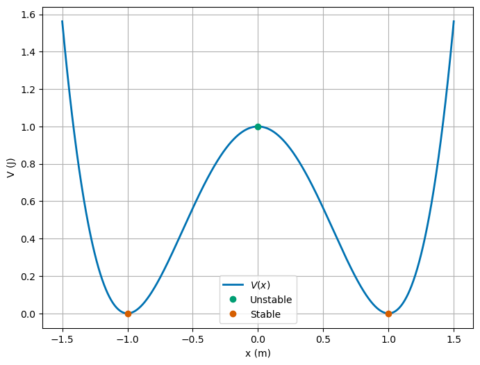
(5pt) Choose two different energies that give two distinct types of motions, draw them on the energy diagram, and describe the motion in each case.
Solution
We can see from the energy diagram that there’s two really distinct kinds of motion. The first is where the total energy is below \(V(0)\), and the second is where the total energy is above \(V(0)\). In the graph above, that is the region where there’s not enough total energy to overcome the potential barrier at \(x=0\), and the region where there’s enough total energy to overcome the potential barrier at \(x=0\). These both give rise to oscillatory motion. In the first case, the motion is confined to a small region around the equilibrium points; the motion is only possible in one side of the well. In the second case, the motion can traverse the entire well, up to the total energy.
Below, we graph the two different energies.
For the first case, we choose \(E = \frac{V(0)}{2}\). And the second case, we choose \(E = \frac{3V(0)}{2}\).
xlim = 1.5
steps = 1000
V0 = 1.0
E1 = V0/2
E2 = 3*V0/2
d = 1.0
x = np.linspace(-xlim, xlim, steps)
V = Potential(x)
fig = plt.figure(figsize=(8, 6))
plt.plot(x, V)
plt.plot(x, E1*np.ones(steps), 'C1--', label=r'$E_{tot}=\frac{V(0)}{2}$')
plt.plot(x, E2*np.ones(steps), 'C2--', label=r'$E_{tot}=\frac{3V(0)}{2}$')
plt.xlabel('x (m)')
plt.ylabel('V (J)')
plt.legend()
plt.grid(True)
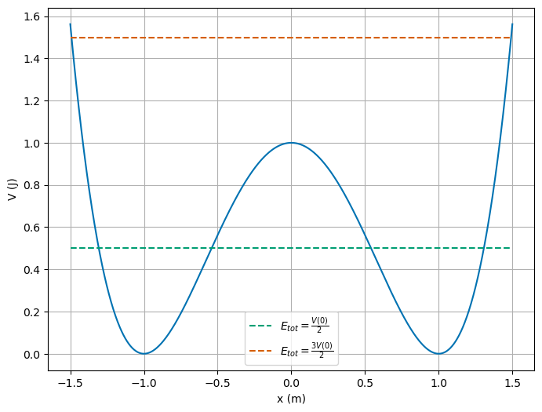
(5pt) If the particle starts at rest at \(x=2d\), what is the velocity of the particle at the point \(x=d\)?
Solution
This system conserves energy, so that at any point the total energy is constant. The total energy of the particle is given by \(E=V(x)+K(v)\) at any point \(x\). We can use this to find the velocity of the particle at \(x=d\).
The total energy of the particle at \(x=2d\) is given by,
At the point \(x=d\), the total energy is still given by \(E=V(d)+K(v)\). We can solve for the velocity of the particle at this point.
So that,
(5pt) If the particle starts at \(x=d\) with velocity \(v_0\), how large must \(v_0\) be for the particle to reach the point \(x=−d\)?
Solution
Again, we can use the conservation of energy to solve this problem. What we must notice is that if the particle is meant to reach \(x=-d\), it must have enough energy to overcome the potential barrier at \(x=0\). This means that the total energy of the particle at \(x=d\) must be just greater than \(V(0)\). We can use this as a limit and solve for the velocity of the particle at \(x=d\). We must have a velocity just greater than this to reach \(x=-d\) (i.e., to go over the potential barrier at \(x=0\)).
The total energy of the particle at \(x=d\) is given by,
We know this because the potential energy at \(x=d\) is zero. The total energy of the particle at \(x=d\) must be just greater than \(V(0)\), so that,
with \(V(0) = \dfrac{V_0}{d^4}\left((0^4)-2(0^2)d^2+d^4\right) = V_0\),
(5pt) Use the above potential to find the net force acting on the particle. Find the acceleration acting on the particle. Is this net force conservative? Calculate the curl of the force \(\boldsymbol{\nabla}\times \boldsymbol{F}\) in order to validate your conclusion.
Solution
With a potential given by \(V(x) = \frac{V_0}{d^4}\left(x^4-2x^2d^2+d^4\right)\), the net force acting on the particle is given by the negative gradient of the potential. We know this is one dimensional, so that the force is given as it was in part 1,
The acceleration acting on the particle is given by \(a = F/m\),
The force is conservative because it is derived from a potential. We can also check this by calculating the curl of the force. The curl of the force is given by,
Because this is a one-dimensional problem, the only relevant components of the curl are those in \(y\) and \(z\), but they result from derivatives in \(y\) and \(z\), which are zero.
(5pt) Are linear momentum and angular momentum conserved? You need to show this by calculating these quantities.
Solution
The linear momentum conservation is related to the net force acting on the particle. In three dimensions, this is given by:
Here, momentum is conserved in \(y\) and \(z\) simply because the force is zero in those directions. In the \(x\) direction, the force is given by \(F(x) = -\dfrac{dV(x)}{dx}\), so that we have a force acting on the particle. This means that the linear momentum is not conserved.
With respect to the angular momentum, we can calculate it as \(\boldsymbol{L} = \boldsymbol{r}\times\boldsymbol{p}\). The angular momentum is given by,
Because we have a one-dimensional problem, the angular momentum is zero. This also means that the angular momentum is conserved in this case as well, because it is zero at all times. Why? There’s no torque acting on the particle, so that the angular momentum is conserved.
(10pt) Write a numerical algorithm to find the position and velocity of the particle at a time \(t+\Delta t\) given the position and velocity at a time \(t\). Here you can use either the standard forward Euler, or the Euler-Cromer or the Velocity Verlet algorithms. You need to justify your choice here (hint: consider energy conservation).
Solution
To start we need to write the equations of motion for the particle. The equations of motion are given by,
so that,
We need to seperate this into two first order differential equations. We can do this by defining the velocity of the particle as \(\dot{x} = v\), so that,
This leads to the following Euler-Cromer step,
Below we implement this algorithm in Python. We use Euler-Cromer because we expect oscillatory motion, and we want to conserve energy.
def integrateEOM(V0, m, d, x0, v0, t0, tf, dt):
t = np.arange(t0, tf, dt)
x = np.zeros(t.shape)
v = np.zeros(t.shape)
x[0], v[0] = x0, v0
for i in range(1, len(t)):
v[i] = v[i-1] - dt * 4*V0/m*(x[i-1]**3/d**4 - x[i-1]/d**2)
x[i] = x[i-1] + dt * v[i]
return t, x, v
(10pt) Use now your program to find the position of the particle as function of time from \(t=0\) to \(t=30\) s using a mass \(m=1.0\) kg, the parameter \(V_0=1\) J and \(d=0.1\) m. Make a plot of three distinct positions with initial conditions \(x_0=d\) and \(v_0=0.5\) m/s, \(x_0=d\) and \(v_0=1.5\) m/s, and \(x_0=d\) and \(v_0=2.5\) m/s. Plot the velocity. Perform these analyses with and without the term \(x^4\) in the potential. Do you see a difference? What do you notice?
Solution
The first thing to notice is that \(V(d)=0\), so we increasing the velocity of the particle at \(x=d\) to see what happens. This does allow us to calculate the total energy of the particle in each trial and plot it directly. The table below shows the total energy of the particle in each trial where we use (\(m=1\)):
\(v_0\) (m/s) |
\(E_{tot}\) (J) |
|---|---|
0.5 |
0.125 |
1.5 |
1.125 |
2.5 |
3.125 |
We can see that the total energy does exceed \(V(0)=1\) J, so that the particle will have enough energy to overcome the potential barrier at \(x=0\). This means that the particle will oscillate around \(x=d\) in trial 1, but it is able to oscillate in across both wells in the other two trials. We can also see the as the energy increases, the symmetry of the oscillation is broken. The graph of the energy is shown below.
xlim = 0.2
steps = 1000
V0 = 1.0
E1 = 0.125
E2 = 1.125
E3 = 3.125
d = 0.1
x = np.linspace(-xlim, xlim, steps)
V = Potential(x)
fig = plt.figure(figsize=(8, 6))
plt.plot(x, V)
plt.plot(x, E1*np.ones(steps), 'C1--', label='Trial 1')
plt.plot(x, E2*np.ones(steps), 'C2--', label='Trial 2')
plt.plot(x, E3*np.ones(steps), 'C3--', label='Trial 3')
plt.xlabel('x (m)')
plt.ylabel('V (J)')
plt.legend()
plt.grid(True)
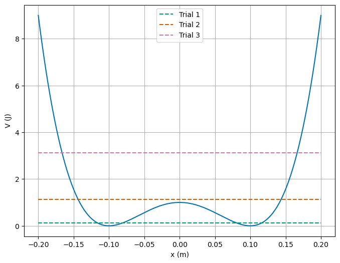
Solution
We can see the motion is different in each case by using our integrator we wrote for the different trials. We plot the position and velocity for each trial below for 0 to 30 seconds. We can see the motion stays confined. But it’s hard to see the differences in the motion because the object oscillates rapidly in the window. We plot a shorter time window as well to see the differences in the motion.
m = 1
V0 = 1
d = 0.1
t0 = 0
tf = 30
N = 10000
dt = (tf - t0)/N
end = int(np.floor(N/20))
short=True
vel=False
initial_conditions = pd.DataFrame({'x0': [d,d,d], 'v0': [0.5, 1.5, 2.5]})
fig = plt.figure(figsize=(8, 6))
plt.xlabel('t (s)')
if vel:
plt.title('Velocity of the particle')
plt.ylabel('v (m/s)')
else:
plt.title('Position of the particle')
plt.ylabel('x (m)')
for i in range(len(initial_conditions)):
x0 = initial_conditions.x0[i]
v0 = initial_conditions.v0[i]
t, x, v = integrateEOM(V0, m, d, x0, v0, t0, tf, dt)
if short:
plt.plot(t[0:end], x[0:end], label='Trial {}'.format(i+1))
else:
plt.plot(t, x, label='Trial {}'.format(i+1))
plt.legend()
<matplotlib.legend.Legend at 0x140ea1f40>
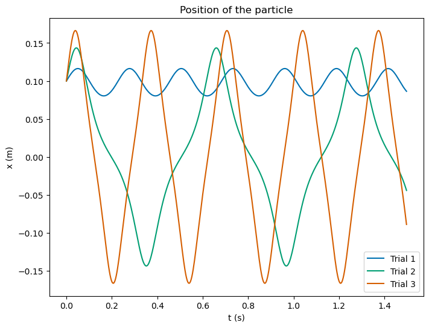
Solution
If we remove the \(x^4\) term from the potential, we can see that the motion is different. The potential is given by,
So that the force acting on the particle is given by,
We have a new set of equations of motion,
And the Euler-Cromer step is given by,
We can program that and model the motion. But we should notice we’ve lost the confinement part of the potential. We expect the particle to run off to infinity. We can plot figures showing shorter and shorter times. This illustrates the blow up of the motion. You can see the motion is unbounded and the particle runs off to infinity.
def integrateEOMnoConfine(V0, m, d, x0, v0, t0, tf, dt):
t = np.arange(t0, tf, dt)
x = np.zeros(t.shape)
v = np.zeros(t.shape)
x[0], v[0] = x0, v0
for i in range(1, len(t)):
v[i] = v[i-1] + dt * 4*V0/m*(x[i-1]/d**2)
x[i] = x[i-1] + dt * v[i]
return t, x, v
m = 1
V0 = 1
d = 0.1
t0 = 0
tf = 30
N = 10000
dt = (tf - t0)/N
end = int(np.floor(N/100))
short=True
vel=False
initial_conditions = pd.DataFrame({'x0': [d,d,d], 'v0': [0.5, 1.5, 2.5]})
fig = plt.figure(figsize=(8, 6))
plt.xlabel('t (s)')
if vel:
plt.title('Velocity of the particle')
plt.ylabel('v (m/s)')
else:
plt.title('Position of the particle')
plt.ylabel('x (m)')
for i in range(len(initial_conditions)):
x0 = initial_conditions.x0[i]
v0 = initial_conditions.v0[i]
t, x, v = integrateEOMnoConfine(V0, m, d, x0, v0, t0, tf, dt)
if short:
plt.plot(t[0:end], x[0:end], label='Trial {} (short time)'.format(i+1))
else:
plt.plot(t, x, label='Trial {}'.format(i+1))
plt.legend()
<matplotlib.legend.Legend at 0x140f114c0>
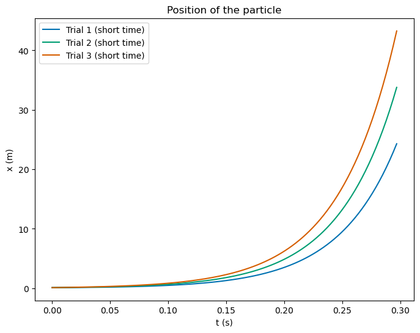
(10pt) Describe the behavior of the particle for the three initial conditions and sketch the motion in an energy diagram. Is energy conserved in your simulations?
Solution
We sketched the energy diagram above, and discussed the motion we expected to see. We can illustrate that the energy is conserved by direct calculation. We plot them below for each trial. We can see that the energy is roughly conserved in each trial. If we adjust the step size, it will be better conserved.
m = 1
V0 = 1
d = 0.1
t0 = 0
tf = 3
N = 10000
dt = (tf - t0)/N
def ComputeEnergies(V0, m, d, x0, v0, t0, tf, dt):
t, x, v = integrateEOM(V0, m, d, x0, v0, t0, tf, dt)
KE = 0.5*m*v**2
PE = Potential(x)
return t, KE, PE
def PlotEnergy(V0, m, d, x0, v0, t0, tf, dt):
t, KE, PE = ComputeEnergies(V0, m, d, x0, v0, t0, tf, dt)
plt.figure(figsize=(8, 6))
plt.plot(t, KE, label='Kinetic Energy')
plt.plot(t, PE, label='Potential Energy')
plt.plot(t, KE+PE, label='Total Energy')
plt.xlabel('t (s)')
plt.ylabel('Energy (J)')
plt.legend()
initial_conditions = pd.DataFrame({'x0': [d, d, d], 'v0': [0.5, 1.5, 2.5]})
PlotEnergy(V0, m, d, initial_conditions.x0[0], initial_conditions.v0[0], t0, tf, dt)
PlotEnergy(V0, m, d, initial_conditions.x0[1], initial_conditions.v0[1], t0, tf, dt)
PlotEnergy(V0, m, d, initial_conditions.x0[2], initial_conditions.v0[2], t0, tf, dt)
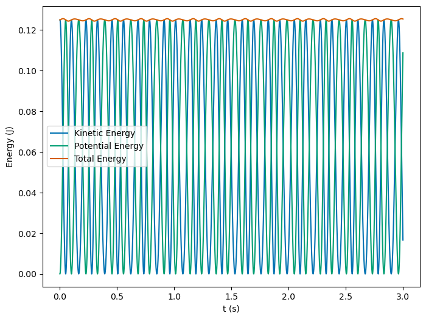
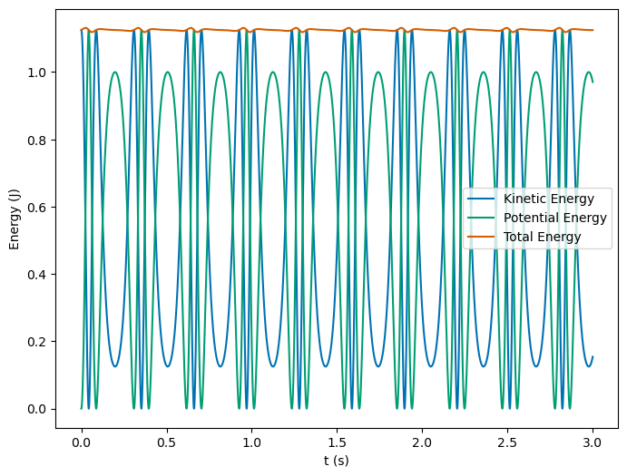
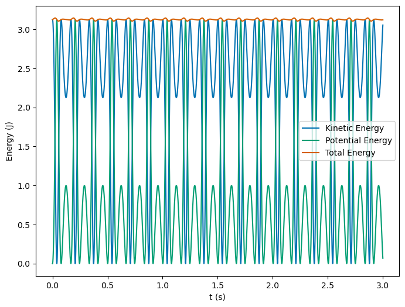
Part 2, a model of quark confinement#
In part 2, we are going to study a new potential. This potential contains the basic mathematical components needed to describe the confinement of quarks through a term \(\kappa x\). The aim of this exercise is to try to develop your intuition about the motion of physical objects due to specific forces. Then we will test our intuition by running simulations. The potential, in one dimension only is defined for \(x\in [0.2,\infty)\). It reads:
where the last term is the one which ensures confinement of for example quarks.
(5pt) Plot the potential for \(x\in [0.2,10]\) and set \(\gamma=10\), \(\delta = 3\) and \(\kappa =1\). Find the value of \(x\) where the potential has a minimum.
Solution
We can plot the potential using the given parameters. It might be hard to compute the location of the energy minimum sometimes. Graphing is a helpful tool to see if we are on the right track.
def quarkPotential(gamma, delta, kappa, x):
return -gamma/x+delta/x**2+kappa*x
xstart = 0.2
xend = 10
steps = 1000
x = np.linspace(xstart, xend, steps)
gamma = 10
delta = 3
kappa = 1
V = quarkPotential(gamma, delta, kappa, x)
minV = np.min(V)
minX = x[np.argmin(V)]
fig = plt.figure(figsize=(8, 6))
plt.plot(x, V, lw=2, label=r'$V(x)$')
plt.plot(minX, minV, 'C1o', label='Min. V={:.2e}V, x={:.2e}m'.format(minV, minX))
plt.plot(x, 0*x, 'k--')
plt.xlabel('x (m)')
plt.ylabel('V (J)')
plt.legend()
plt.grid(True)
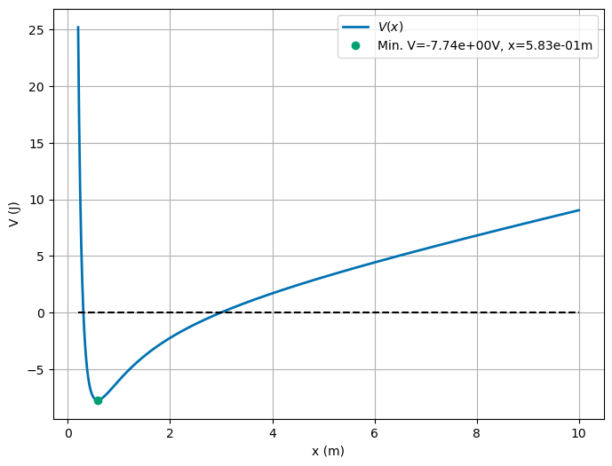
(5pt) Show that this potential leads to an energy conserving force by calculating the curl of the resulting force.
Solution
This potential is \(V(x) = -\frac{\gamma}{x}+\frac{\delta}{x^2}+\kappa x\). The force is given by the negative gradient of the potential, so that,
This is again a 1D force, so that the curl will be zero. We can show this explicitly by calculating the curl,
Thus we expect the force to conserve energy, and because it is the only force acting on the particle, we expect the total energy to be conserved.
(10pt) Assume now that at \(x=2\) the particle moving in this potential is at rest, that is its velocity is zero. Find the total energy and describe what kind of motion you can expect. The point \(x=2\) is a so-called turning point. Can you find the other turning point where the kinetic energy is zero. If you keep increasing \(x\), will the particle ever be able to escape the potential well?
Solution
We can find the total energy of the particle at \(x=2\) by using the potential and kinetic energy. The total energy is given by,
This sets the cap on the energy, so we expect that the particle will oscillate between \(x=2\) and some other point. By graphing the potential, and the total energy line, we can see where that point is. We can also see with this energy the particle will never escape the potential well.
xstart = 0.2
xend = 10
steps = 1000
x = np.linspace(xstart, xend, steps)
xstart = 0.2
xend = 10
steps = 1000
gamma = 10
delta = 3
kappa = 1
Etot = 3.75
V = quarkPotential(gamma, delta, kappa, x)
fig = plt.figure(figsize=(8, 6))
plt.plot(x, V, lw=2, label=r'$V(x)$')
plt.plot(x, Etot*np.ones(steps), 'C1--', label=r'$E_{tot}=3.75\; \mathrm{J}$')
plt.xlabel('x (m)')
plt.ylabel('V (J)')
plt.legend()
plt.grid(True)
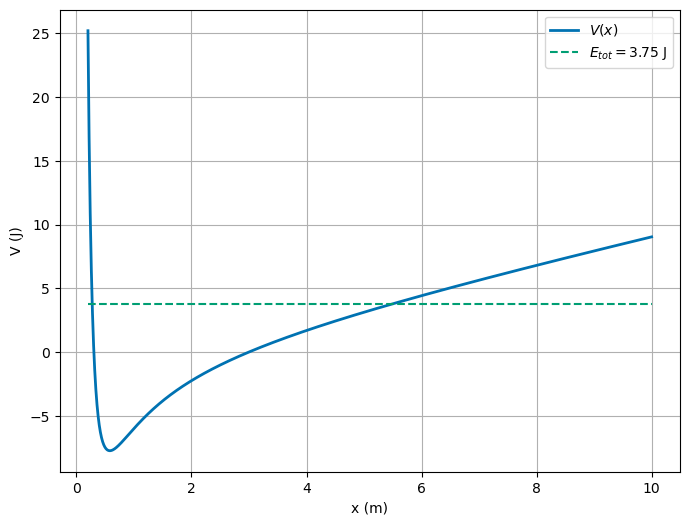
Solution
It’s hard to see what might happen with the little patch of space we plotted. We can see what happens as \(x \rightarrow \infty\) by graphing the potential. It grows without bound. That follows from the expression itself where the \(\kappa x\) term blows up at large \(x\). Thus the particle will never escape the potential well.
xstart = 0.2
xend = 200
steps = 10000
x = np.linspace(xstart, xend, steps)
gamma = 10
delta = 3
kappa = 1
Etot = 100
V = quarkPotential(gamma, delta, kappa, x)
fig = plt.figure(figsize=(8, 6))
plt.plot(x, V, lw=2, label=r'$V(x)$')
plt.plot(x, Etot*np.ones(steps), 'C1--', label=r'$E_{tot}=100\; \mathrm{J}$')
plt.xlabel('x (m)')
plt.ylabel('V (J)')
plt.legend()
plt.grid(True)
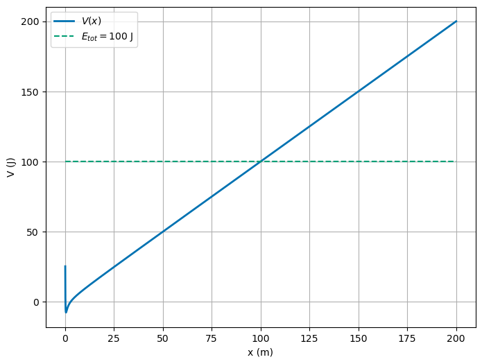
(20pt) Finally we will now change our program (using either the Euler-Cromer or the Velocity-Verlet method) and compute the position and the velocity as functions of time using the force computed from the above potential. Use as initial condition at time \(t=0\) that the particle is \(x_0=2\) and has initial velocity \(v_0=0\). Test numerically that energy is conserved as function of time.
Solution
We start by writing an EulerCromer integrator for the force. We then use this to model the motion of the particle. We can plot the position and velocity of the particle as a function of time. We can also plot the total energy of the particle as a function of time. We can see that the energy is conserved in the simulation.
def IntegrateQuarkEOM(gamma, delta, kappa, x0, v0, t0, tf, dt):
t = np.arange(t0, tf, dt)
x = np.zeros(t.shape)
v = np.zeros(t.shape)
x[0], v[0] = x0, v0
for i in range(1, len(t)):
v[i] = v[i-1] + dt * (-gamma/x[i-1]**2 + 2*delta/x[i-1]**3 - kappa)
x[i] = x[i-1] + dt * v[i]
return t, x, v
gamma = 10
delta = 3
kappa = 1
x0 = 2
v0 = 0
t0 = 0
tf = 10
N = 100000
dt = (tf - t0)/N
t, x, v = IntegrateQuarkEOM(gamma, delta, kappa, x0, v0, t0, tf, dt)
Quark1 = pd.DataFrame({'t': t, 'x': x, 'v': v})
plt.figure(figsize=(8, 6))
plt.plot(Quark1.t, Quark1.x, label='x(t)')
plt.xlabel('t (s)')
plt.ylabel('x (m)')
plt.legend()
plt.grid(True)
plt.figure(figsize=(8, 6))
plt.plot(Quark1.t, Quark1.v, label='v(t)')
plt.xlabel('t (s)')
plt.ylabel('v (m/s)')
plt.legend()
plt.grid(True)
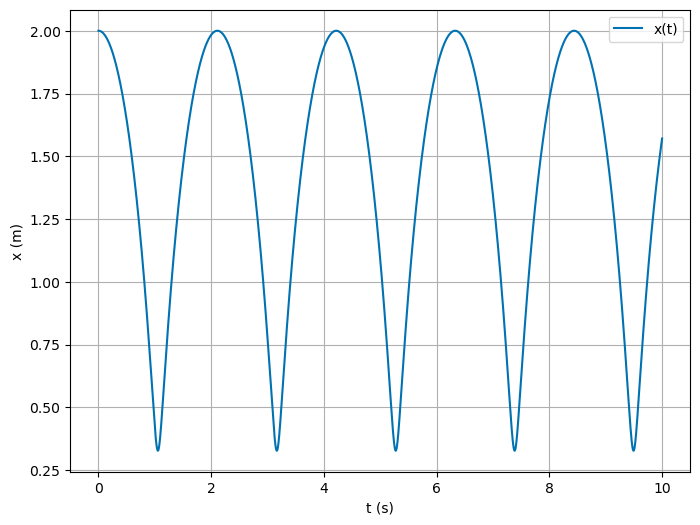
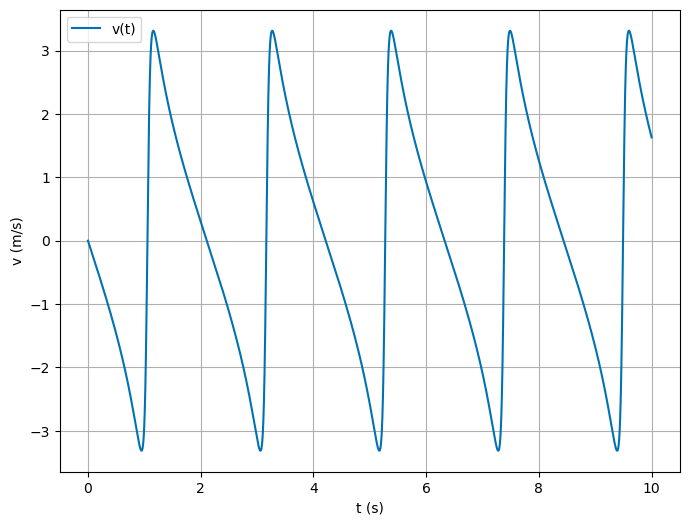
PE = quarkPotential(gamma, delta, kappa, Quark1.x)
KE = 0.5*Quark1.v**2
Etot = PE + KE
plt.figure(figsize=(8, 6))
plt.plot(Quark1.t, PE, label='PE(t)')
plt.plot(Quark1.t, KE, label='KE(t)')
plt.plot(Quark1.t, Etot, label='Etot(t)')
plt.xlabel('t (s)')
plt.ylabel('Energy (J)')
plt.legend()
plt.grid(True)
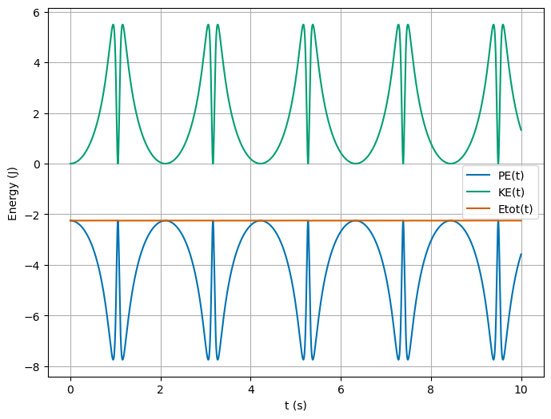